01 Valle dei Templi
Das Tal der Tempel und der Tempel der Eintracht in Agrigento, Sizilien.

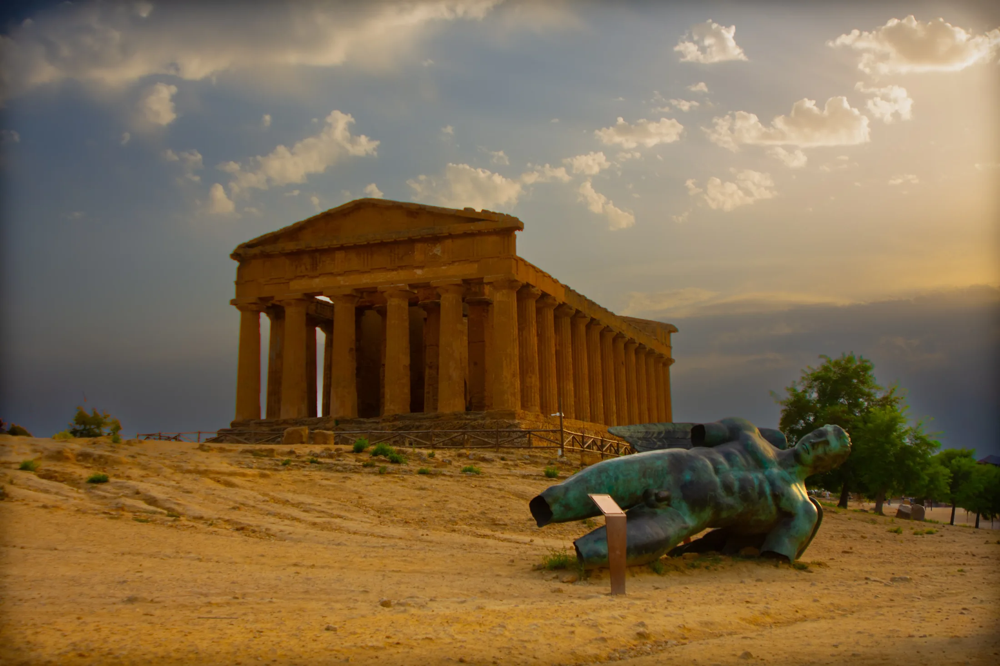


Das Tal der Tempel und der Tempel der Eintracht in Agrigento, Sizilien.

Licht, Wasser und unterirdische Felsformationen in den Höhlen von Vallorbe, Waadt.

Weite Jura-Landschaft und Kühe auf den Weiden am Creux du Van in der Schweiz.

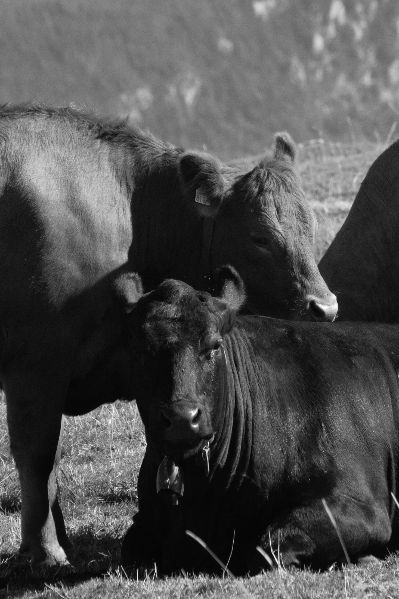
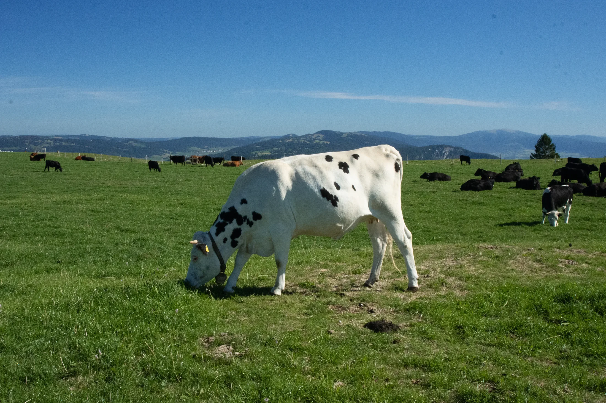
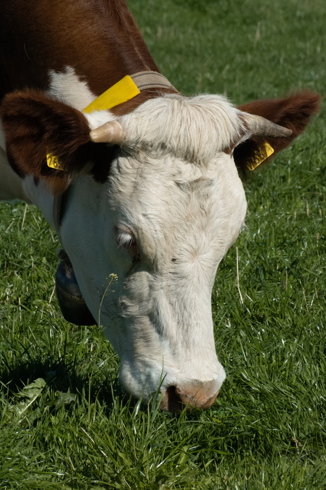
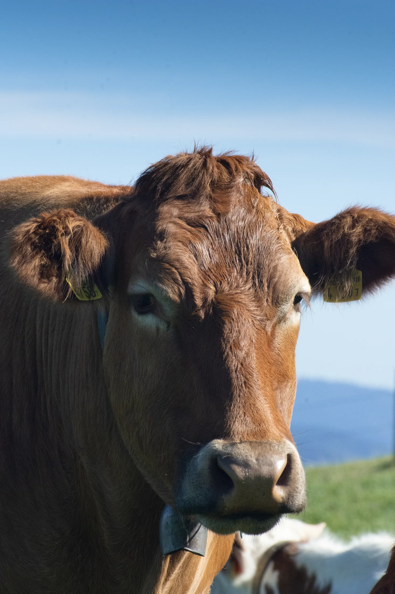
Flora und Fauna im Naturschutzgebiet La Sauge am Neuenburgersee.
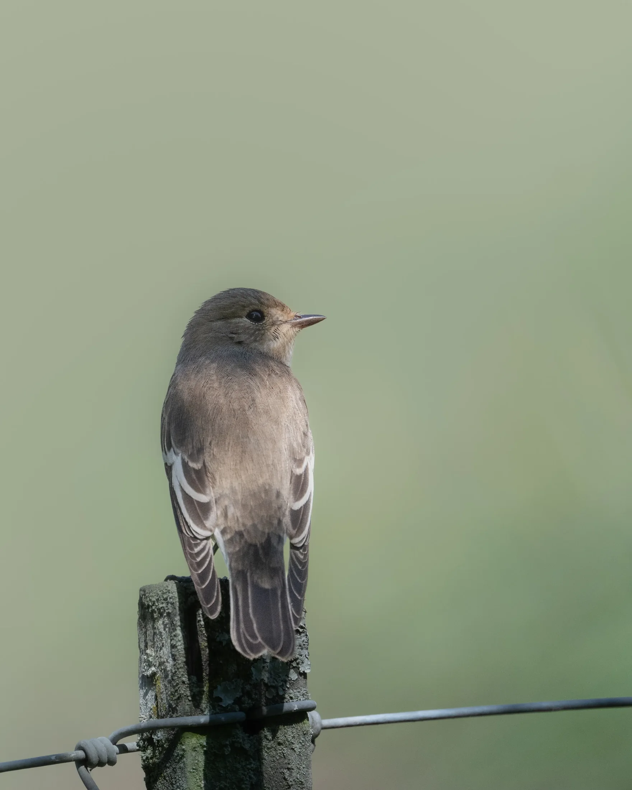
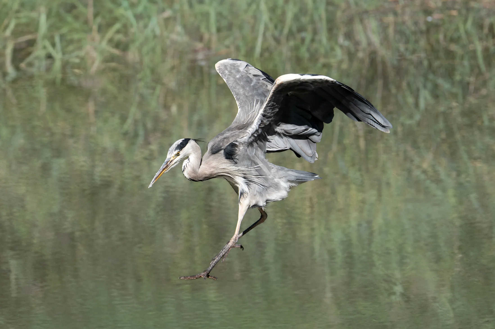
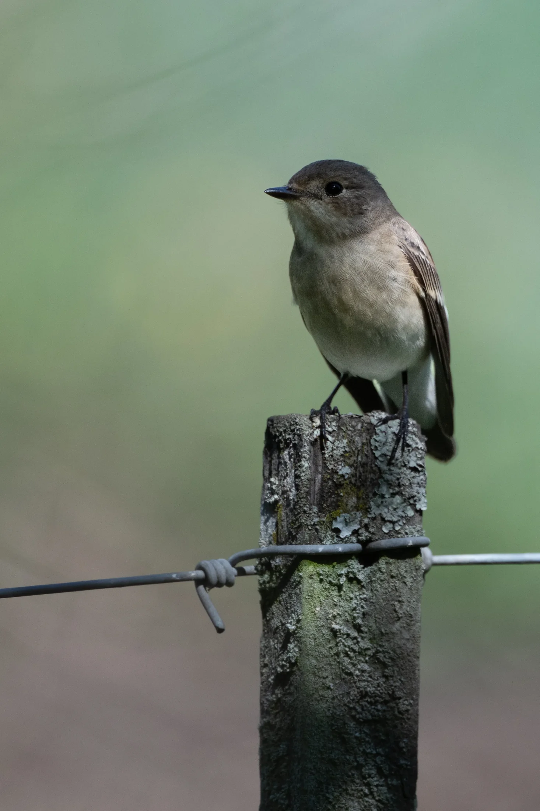
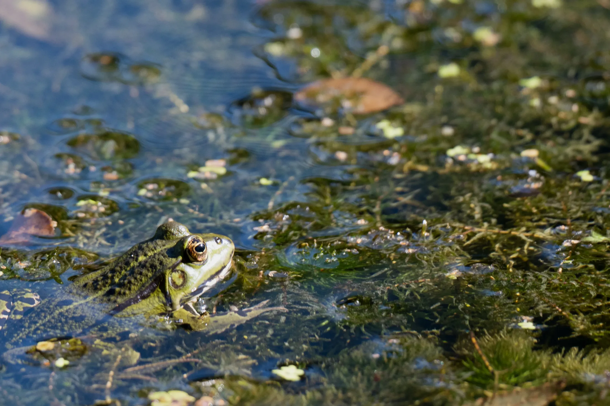

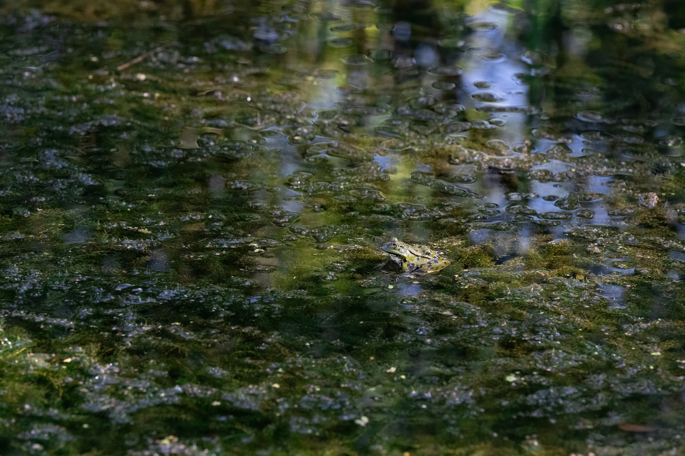
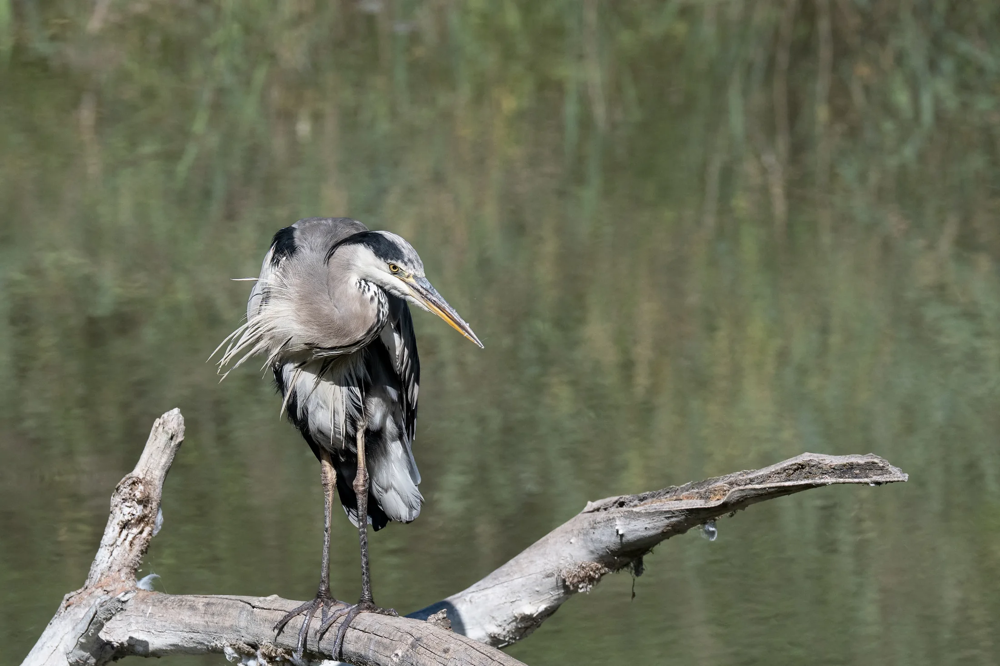